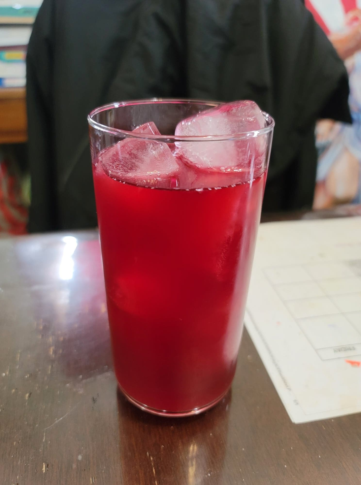

Hibiscus Soda

Ingredients:
- 4 cups Water, nonchlorinated water
- 1/2 cup Sugar
- 4 tsp Dried hibiscus
- 2 tbsp Ginger, grated
- 1/4 cup Ginger bug
Instructions:
- Combine all the ingredients except for the ginger bug into a pot over medium heat. Bring to a boil and then remove from heat. Let steep until cooled completely to room temperature.
- Add in the ginger bug. Strain and pour into flip-top bottles to ferment for 3-7 days, burping regularly. Serve over ice.